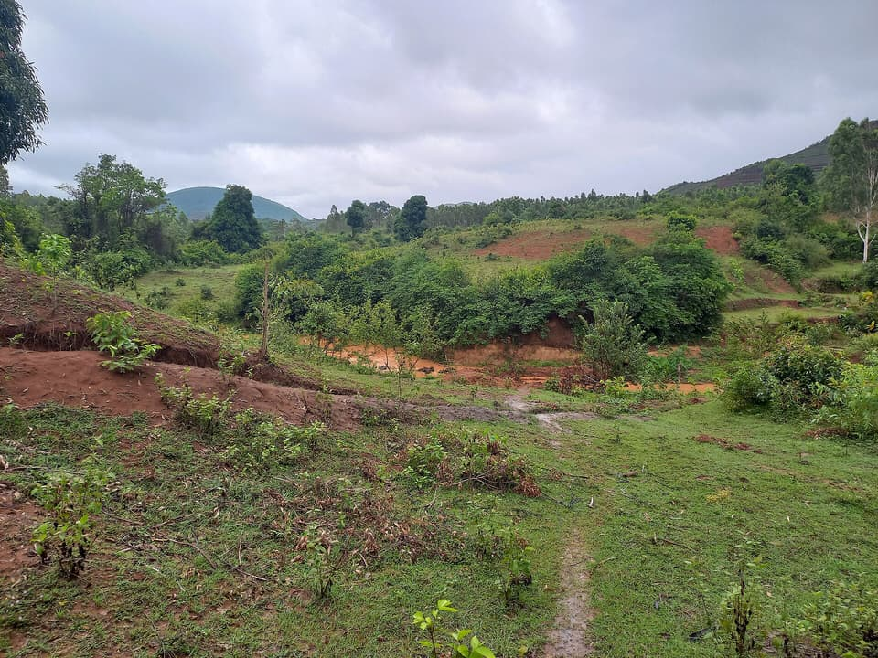
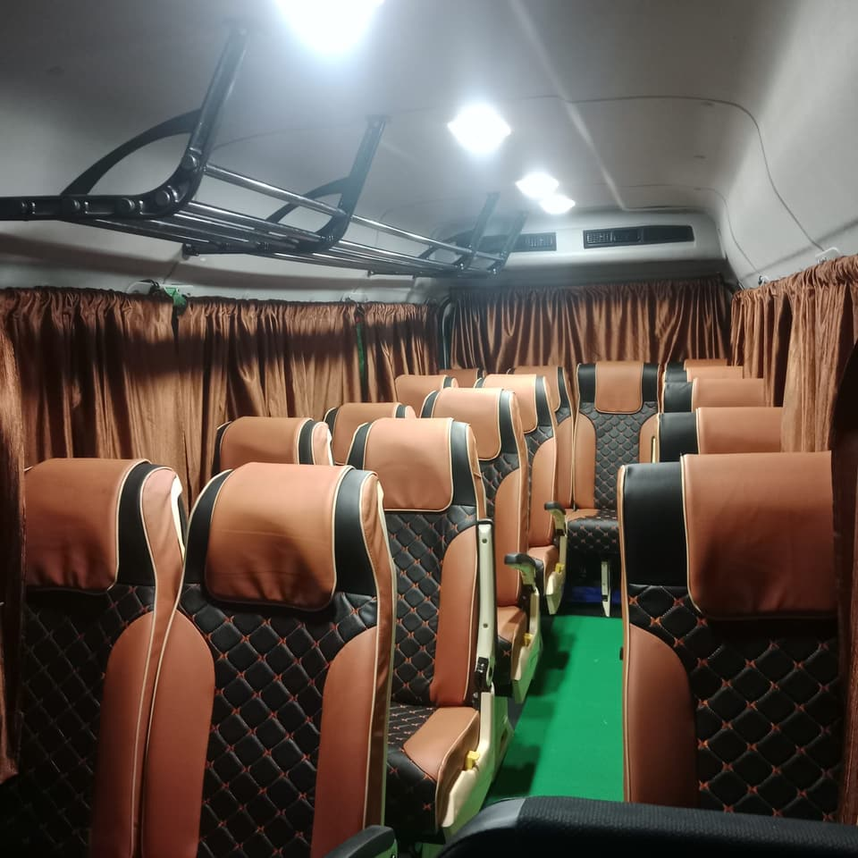
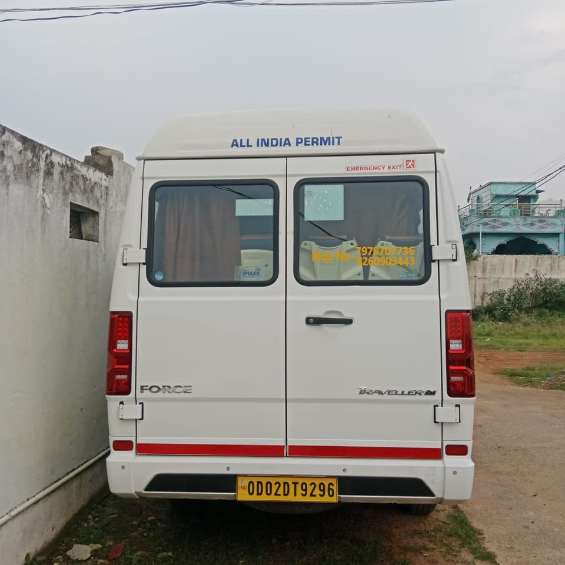

డెలివరీ రోజు, 4 సెప్టెంబర్ 2026. మా ట్రావెలర్ నిజమైన ఫోటో.
నిజమైన ఫోటో · డెలివరీ రోజున మా ట్రావెలర్, 4 సెప్టెంబర్ 2026
కోరాపుట్చూడండి. ప్రయాణంమేముచూసుకుంటాం.
10 నుండి 17 మంది గ్రూపుల కోసం ప్రైవేట్ కోరాపుట్ టూర్లు. దేవమాలి, దుడుమా, గుప్తేశ్వర్, తలమాలి, పుత్సిల్ ఒకే కొత్త AC ట్రావెలర్లో, స్థానిక డ్రైవర్ మరియు ట్రిప్ సహాయంతో.
భువనేశ్వర్, కోల్కతా లేదా ఇంకా దూరం నుండి వచ్చే కుటుంబాలు, స్నేహితులు, యాత్రికుల గ్రూపులు మరియు చిన్న బృందాల కోసం. మీరు చేరుకునే సమయానికి తగ్గట్టు మార్గం ప్లాన్ చేసి, కొండలు, జలపాతాలు, ఆలయాల మధ్య మిమ్మల్ని తీసుకెళ్తాం, ప్రయాణమంతా అందుబాటులో ఉంటాం.

దేవమాలి దారిలో, సునాబెడ దగ్గర వర్షాకాలపు లోయ.కోరాపుట్ జిల్లా · మా బేస్ నుండి సుమారు 20 నిమిషాలు
17 సీట్లు. అద్భుతమైన ఒకే కోరాపుట్.
దారి వెంట స్క్రోల్ చేయండి. ప్రతి స్టాప్కు ఒక ఫోటో, ఒక వాక్యం మరియు కోరాపుట్ పట్టణం నుండి ఎంత సేపు ప్రయాణమో.
ప్రారంభం
కోరాపుట్ పట్టణం
మీ హోటల్, రైల్వే స్టేషన్ లేదా కొండల్లోకి మీ ప్రయాణం ఎక్కడ మొదలైతే అక్కడ పికప్.
మా ట్రావెలర్, వచ్చిన రోజున తీసిన ఫోటో, 4 సెప్టెంబర్ 2026. నిజమైన ఫోటో.
1
పర్వతం
దేవమాలి
1,672 మీ. ఎత్తుతో ఒడిశాలో ఎత్తైన శిఖరం. పైన విశాలమైన గడ్డి మైదానం, అన్ని వైపులా లోయలు, దాదాపు శిఖరం వరకు ఎక్కే రోడ్డు.
కోరాపుట్ నుండి సుమారు 2 గం.సుమారు 70 కి.మీ.07:00కి బయలుదేరితే, సుమారు 09:00కి చేరుకుంటారు
నాలుగు వాస్తవిక ప్రణాళికలు, ఒక్కొక్కటి సమయాలు, స్టాప్లు మరియు ఏవి వదిలేయవచ్చో చెప్పే పేజీ. దగ్గరగా ఉన్నది ఎంచుకోండి, మీ గ్రూప్కు తగ్గట్టు సర్దుబాటు చేస్తాం.
పెండాజామ్ పైన చదునైన శిఖరం గల కొండ, అడవి బదులు గడ్డి, సాధారణంగా పుట్సిల్ గ్రామంతో కలిపి చూస్తారు. మీరు వచ్చే వారంలోనే చివరి రోడ్డును మేము పరిశీలిస్తాం.
సరికొత్త ఫోర్స్ ట్రావెలర్, ఎయిర్ కండిషన్డ్, 17 ప్రయాణికుల సీట్లు, వచ్చిన రోజున సెమిలిగుడాలో తీసిన ఫోటోలు, 4 సెప్టెంబర్ 2026. విశేషణాలు కాదు, వాస్తవాలు.


నిజమైన ఫోటో · మా ట్రావెలర్1 / 5పక్క నుండి. రిజిస్ట్రేషన్ OD02 DT 9296, ఆల్-ఇండియా పర్మిట్.
ఇవి మా సొంత ఫోర్స్ ట్రావెలర్ (OD02 DT 9296) నిజమైన, ఎడిట్ చేయని ఫోటోలు, డెలివరీ రోజున 4 సెప్టెంబర్ 2026 మేమే తీసినవి. ఈ సైట్లో ఎక్కడా స్టాక్ లేదా AI తయారుచేసిన వాహన చిత్రాలు వాడలేదు.
ఫోర్స్ ట్రావెలర్కొత్తగా కొన్నది, సెప్టెంబర్ 2026
17 ప్రయాణికుల సీట్లుమీ గ్రూప్ మొత్తం ఒకే వాహనంలో
ఎయిర్ కండిషన్డ్పొడవైన ఘాట్ రోడ్లలో సౌకర్యం
ఆల్-ఇండియా పర్మిట్సమయానికి సర్వీసింగ్, ప్రతి ట్రిప్ ముందు తనిఖీ
అనుభవం ఉన్న స్థానిక డ్రైవర్దారులు, సమయాలు, స్టాప్లు తెలిసినవారు
టూర్ సహాయం అందుబాటులోసహాయక సిబ్బంది మరియు గైడెడ్ టూర్ సహాయం
ఇక్కడ ప్రతి ఫోటో మా సొంత వాహనానిదే, స్టాక్ ట్రావెలర్ కాదు. ఆర్మ్రెస్ట్లతో పుష్బ్యాక్ సీట్లు, ప్రతి కిటికీకి కర్టెన్లు మరియు చిన్న బ్యాగుల కోసం పైన ర్యాక్.
స్నేహపూర్వక స్థానిక బృందం. కొత్త ప్రదేశంలో గందరగోళం లేదు.
పికప్ నుండి సందర్శన, తిరుగు ప్రయాణం వరకు, మార్గాలు, స్టాప్లు, స్థానిక సమాచారం మరియు ప్రయాణంలో ఊహించని మార్పుల విషయంలో సహాయానికి మా బృందం అందుబాటులో ఉంటుంది.
స్థానిక డ్రైవర్ఘాట్ రోడ్లు, సూర్యోదయ సమయాలు, మంచి భోజనానికి ఎక్కడ ఆగాలో తెలిసినవారు.
సహాయక సిబ్బందిసమయాలు, మార్పులు, ప్రశ్నల కోసం మీ ట్రిప్ అంతటా WhatsAppలో.
గైడెడ్ టూర్ సహాయంమీరు చూస్తున్నది ఏమిటో వివరించడానికి, మీకు కావాలన్నప్పుడల్లా ఒకరు.
ముందు ప్లాన్. ఖరారయ్యాకే చెల్లింపు.
ఈ క్రమం ఎప్పుడూ మారదు, కాబట్టి మీరు దేనికి చెల్లిస్తున్నారో ఎప్పుడూ తెలుస్తుంది.
మీ ట్రిప్ చెప్పండి
తేదీలు, గ్రూప్ సైజు మరియు మీరు ఎక్కడి నుండి వస్తారో. WhatsApp అన్నిటికంటే సులభం.
ప్రణాళిక, ధర ఖరారు చేయండి
మేము మార్గం, సమయాలు మరియు ట్రావెలర్ ధర పంపుతాం. నిర్ణయించే ముందే ఏమి కలిసి ఉందో మీకు తెలుస్తుంది.
బుకింగ్ అడ్వాన్స్ చెల్లించండి
అధికారిక UPI QR మరియు బుకింగ్ రిఫరెన్స్ WhatsAppలో ప్రైవేటుగా వస్తాయి, మొత్తం ఎంతో ధృవీకరణతో.
మీ ప్రణాళిక, ధర మరియు లభ్యత ఖరారయ్యే ముందు ఎలాంటి చెల్లింపు అడగం.
ప్రతి స్టాప్, పిన్ చేసి
ప్రదేశాలు ఎక్కడ ఉన్నాయో, కోరాపుట్ పట్టణం చుట్టూ ఎలా ఉన్నాయో. లైవ్ దిశల కోసం ఏ పిన్నైనా Google Mapsలో తెరవండి.
మీ రైలు, విమానం లేదా బస్సు చెప్పండి, మేము అక్కడ కలుస్తాం. ప్రయాణ సమయాలు సెమిలిగుడాలోని మా బేస్ నుండి; కోరాపుట్ పట్టణం ఇంకా సుమారు 20 నిమిషాలు పశ్చిమాన ఉంటుంది.
KRPU
కోరాపుట్ జంక్షన్
భువనేశ్వర్ (హీరాఖండ్), హౌరా (సమలేశ్వరి), విశాఖపట్నం, జగదల్పూర్ నుండి ఎక్స్ప్రెస్ రైళ్లు. మా సాధారణ పికప్ పాయింట్.
అవే భువనేశ్వర్, హౌరా ఎక్స్ప్రెస్లు ఇక్కడి నుండి జగదల్పూర్ వైపు కొనసాగుతాయి. జయపూర్ విమానాశ్రయం 10 నిమిషాల దూరం. గుప్తేశ్వర్, కోలాబ్ ప్రణాళికలకు అనువైనది.
సెమిలిగుడా నుండి సుమారు 1 గం. 10 నిమి.సుమారు 45 కి.మీ.
మేము సేవలందించే చిన్న హాల్ట్లు (ప్యాసింజర్ రైళ్లు)
కోరాపుట్–రాయగడ లైన్ మరియు కిరండూల్ లైన్ రెండు దిక్కుల్లోని స్టాప్లు. ఇక్కడ ప్యాసింజర్, DMU రైళ్లు మాత్రమే ఆగుతాయి, సమయాలు మారుతుంటాయి, కాబట్టి మీ రైలు నంబర్ పంపండి, మేము ధృవీకరిస్తాం.
చటారిపుట్CTS1 గం. 10 నిమి. · కిరండూల్ లైన్, ఉత్తరం
ఆంధ్రప్రదేశ్లో అరకు లైన్లోని షిమిలిగుడా స్టేషన్ (SMLG) మా సెమిలిగుడా కాదు, వేరే ప్రదేశం. కోరాపుట్ కోసం కోరాపుట్ జంక్షన్ (KRPU)కు బుక్ చేయండి.
PYB
విమానాలు: జయపూర్ విమానాశ్రయం
కోరాపుట్ పట్టణం నుండి సుమారు 40 నిమి., మా బేస్ నుండి సుమారు 1 గం. 10 నిమి.. టెర్మినల్ దగ్గర పికప్.
మార్గం
సమయాలు
నడిచేది
భువనేశ్వర్ → జయపూర్
07:20–08:55 and 11:15–12:50
వారానికి సుమారు 9 విమానాలు
జయపూర్ → భువనేశ్వర్
10:50–12:25 and 14:35–16:10
ప్రతిరోజూ, కొన్ని రోజులు రెండుసార్లు
విశాఖపట్నం → జయపూర్
09:40–10:35
ప్రతిరోజూ
జయపూర్ → విశాఖపట్నం
13:10–14:10
ప్రతిరోజూ
IndiaOne Air 9 సీట్ల సెస్నా గ్రాండ్ కారవాన్ నడుపుతుంది, కాబట్టి సీట్లు, లగేజ్ పరిమితం: ముందుగా బుక్ చేసుకోండి, క్యాబిన్ సైజు బ్యాగులతో ప్రయాణించండి. జయపూర్ విమానాశ్రయంలో ప్రతి విమానానికి కలుస్తాం.
రాత్రి, పగలు సర్వీసులు కోరాపుట్ బస్టాండ్కు చేరుతాయి, మా బేస్ నుండి 20 నిమిషాలు. మీరు చెప్పిన బస్సు దగ్గర కలుస్తాం.
భువనేశ్వర్OSRTC (రోజుకు 7) మరియు ప్రైవేటు స్లీపర్, వోల్వో ఆపరేటర్లు. OSRTC బయలుదేరే సమయాలు 14:00 నుండి 20:00; చాలా ప్రైవేటు బస్సులు 18:00 నుండి 21:30 మధ్య బయలుదేరుతాయి. రాత్రంతా 11 నుండి 12 గం. సుమారు ₹666 నుండి (OSRTC).
విశాఖపట్నంOSRTC (రోజుకు 7) మరియు APSRTC. OSRTC పగలు, రాత్రి (00:30 నుండి 23:15); APSRTC సుమారు 04:30 నుండి. అరకు లేదా సాలూరు మీదుగా 5 నుండి 6 గం. ₹235 నుండి ₹800.
రాయగడ మరియు బరంపురంOSRTC మరియు ప్రైవేటు పగటి బస్సులు, రోజంతా తరచుగా. రాయగడ నుండి 3 గం., బరంపురం నుండి 7 నుండి 8 గం.
కోల్కతానేరుగా బస్సు ఆచరణలో లేదు. రైలులో రండి, లేదా భువనేశ్వర్ లేదా విశాఖపట్నం వరకు విమానంలో వచ్చి అక్కడి నుండి కనెక్ట్ అవ్వండి.
సమయాలు ఆపరేటర్ల జాబితాల నుండి, 18 సెప్టెంబర్ 2026. సీజన్, పండుగలతో మారుతాయి; మీ టికెట్ పంపండి, పికప్ సమయం ధృవీకరిస్తాం.
మాకు రాసే ముందు
చాలా గ్రూపులు ముందుగా అడిగే ప్రశ్నలకు చిన్న జవాబులు.
ఎంతమంది కలిసి ప్రయాణించవచ్చు?
ఒక ట్రావెలర్లో 17 మంది ప్రయాణికుల వరకు. మీ లగేజ్ అవసరాలు చెప్పండి, బుకింగ్ ముందే సీటింగ్ ప్లాన్ ధృవీకరిస్తాం.
ప్రయాణ ప్రణాళిక మొత్తం మీరే ప్లాన్ చేస్తారా?
అవును. తేదీలు, చేరుకునే చోటు, గ్రూప్ సైజు, ఆసక్తులు చెప్పండి. మీ రోజులకు తగ్గ మార్గం సూచిస్తాం, సూర్యోదయ స్టాప్లు, పొడవైన ప్రయాణాలకు సరైన సమయాలతో.
రైల్వే స్టేషన్ లేదా విమానాశ్రయం నుండి పికప్ చేస్తారా?
అవును. కోరాపుట్ జంక్షన్, దామన్జోడి, జయపూర్, అరకు, రాయగడ, అభ్యర్థనపై విజయనగరం, విశాఖపట్నం, అలాగే పైన ఇచ్చిన చిన్న హాల్ట్ల దగ్గర రైళ్లను కలుస్తాం. మీ రైలు నంబర్ పంపండి, దానికి తగ్గట్టు వాహనం ఉంచుతాం. IndiaOne Air విమానాలకు జయపూర్ విమానాశ్రయం పికప్.
నేను ఎప్పుడు చెల్లించాలి?
ప్రణాళిక, ధర మరియు లభ్యత ఖరారయ్యాకే. UPI QR మరియు బుకింగ్ రిఫరెన్స్ WhatsAppలో ప్రైవేటుగా పంపుతాం.
ఏ నెలలు బాగుంటాయి?
అక్టోబర్ నుండి ఫిబ్రవరి వరకు చల్లగా, నిర్మలంగా ఉంటుంది. సెప్టెంబర్ నుండి డిసెంబర్ వరకు జలపాతాలు నిండుగా ఉంటాయి. వర్షాకాలంలో పచ్చగా ఉంటుంది కానీ కొన్ని రోడ్లు నెమ్మదిస్తాయి.
నిజమైన ఫోటో · మా ట్రావెలర్
మీ తేదీలు చెప్పండి. మిగతా దారి మేము చూసుకుంటాం.
సాధారణంగా సులభం: తేదీలు, ప్రయాణికుల సంఖ్య మరియు ఎక్కడి నుండి వస్తారో. మేము మార్గం, సమయాలు మరియు ట్రావెలర్ ధరతో జవాబిస్తాం.